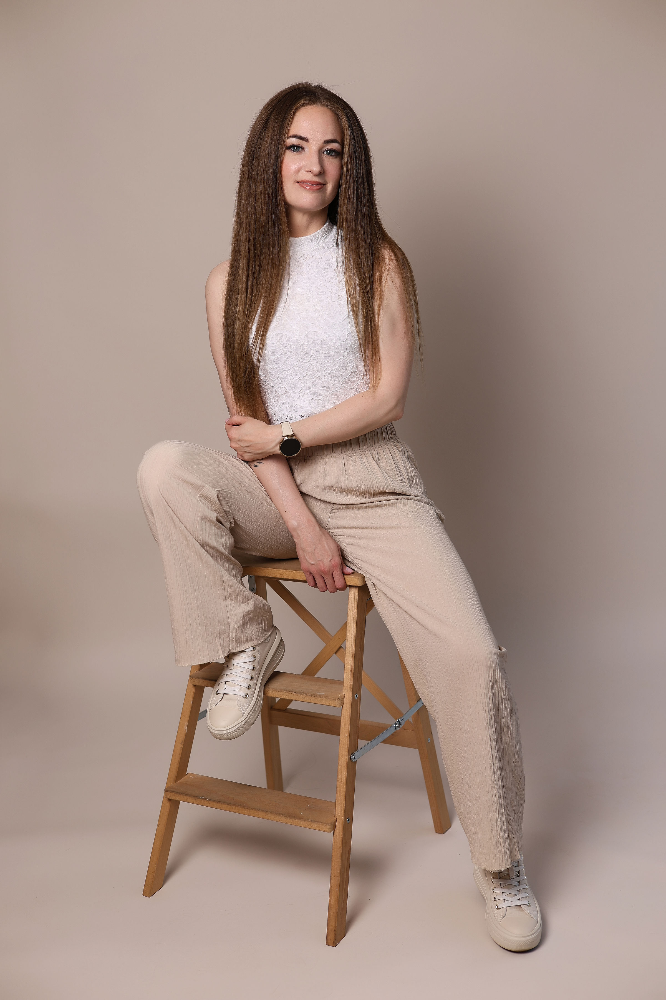

Rólam
Bemutatkozás

A szépség világa már 14 éves koromban magával ragadott. Akkor szerettem bele a kozmetika világába, azóta is tudom, hogy ez az a hivatás, amit teljes szívvel szeretnék végezni.
Divat–stílus szakon érettségiztem, emellett a rajz is mindig fontos része volt az életemnek, amelyből szintén érettségit tettem. A kreativitás, a harmónia és a részletek iránti szeretet ma is végigkíséri a munkámat, minden egyes vendég egy új történet és egy új alkotás.
2012 óta dolgozom saját vállalkozásomban, 2021 óta kozmetikus mesterként. Az elmúlt évek során megtapasztaltam, hogy a munkám sokkal többről szól, mint a külső szépség kiemeléséről. Számomra az a legnagyobb öröm, amikor a vendégem mosolyogva néz a tükörbe, magabiztosabbnak érzi magát, és egy kicsit könnyebb lélekkel indul tovább a napja.
Hiszem, hogy a szépség belülről indul, én pedig a külső megjelenés finom kiemelésével szeretném ezt még ragyogóbbá tenni. A munkám a szenvedélyem. Folyamatosan képzem magam, hogy a legnagyobb odafigyeléssel dolgozhassak.
Ha ellátogatsz hozzám, nemcsak egy kezelést kapsz, hanem egy kis időt önmagadra – ahol a szépülés mellett a testi és lelki feltöltődés is helyet kap. Szeretettel várlak, hogy együtt kiemeljük azt a szépséget, ami mindig is benned volt.
Szakmai tevékenységeim
-
2006 – 2012
Kozmetikus szakképesítés, Divat-Stílus érettségi
Nappali smink III. helyezés, Regionális verseny Különdíj
-
2013 – 2022
3-6D LASHES-képzés, 2D LASHES-képzés, 3D műszempilla építés
Sarasvati Beauty hennafestő tanfolyam
Reflectocil Szempilla Lifting és Dauer
-
2021
Prémium masszázstechnikák anti-aging kezelésekhez
JADE ROLL és GUA SHA liftingmasszázs
Nyirokdrenázs, Szemkezelés
-
2021 – 2023
Kozmetikus Mester Képzés, Baranyai Kereskedelmi és Iparkamara
Ombre-szálazott szemöldöktetoválás alapképzés